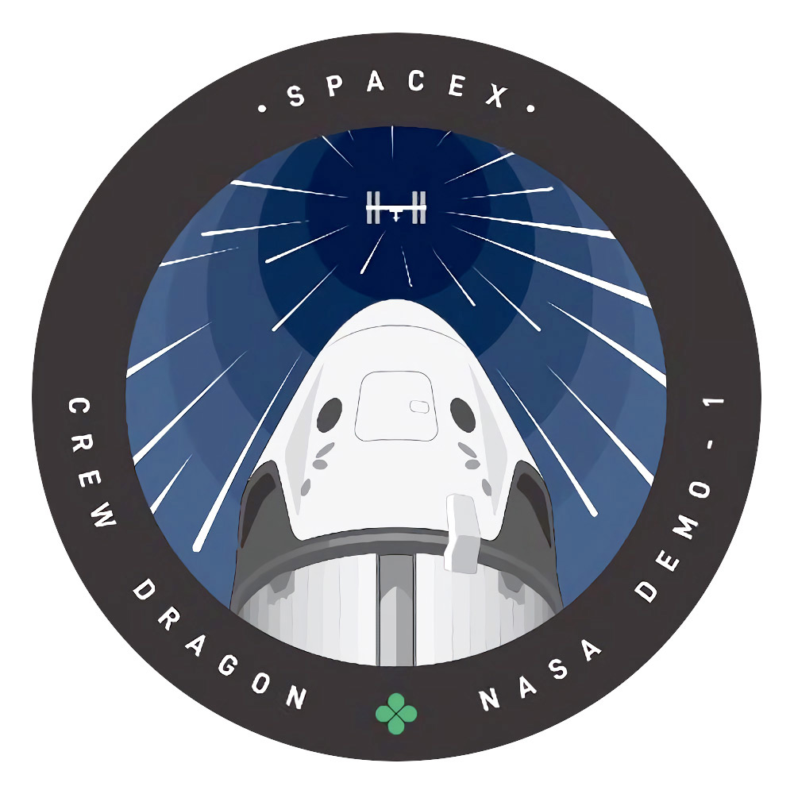
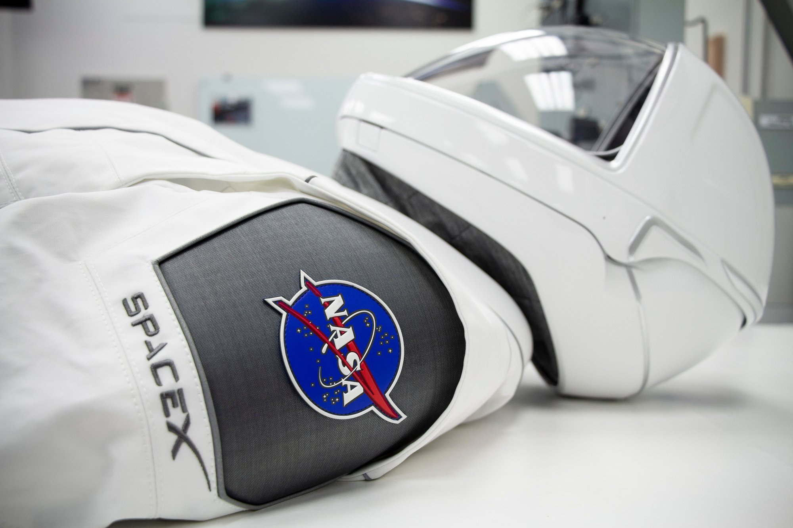

El repte era enviar un equip d'astronautas a l'estació espacial internacional per mitjançant d'un cohet que sigues el més econòmic i eficient possible. És una tasca complicada, ja que moltes de les despeses que produeix enviar astronautas a l'EEI, és que per cada cop que volem enviar a algun astronauta, hem de utilitzar un cohet, ja que no podem aprofitar els altres. En aquesta missió, hem aconseguit utilitzar un cohet reutilitzable per enviar 2 astronautas a l'EEI i recuperar el vehicle per a futurs usos. Els astronautas van arribar sene cap complicació a l'EEI i van estar allà durant 2 messos treballant en diversos experiments
Aquesta missio ha sigut portada a terme gràcies a la colaboració de l'organisme espacial dels estats units, la NASA, i l'empressa privada aeroespacial SpaceX. Els dos organismes van treballar conjuntament per a aconsseguir que la missió pogues arribar a ser complerta satisfactoriament. SpaceX es va ocupar de la part d'enginyeria: Els cohets, els mòduls, el llançament... NASA, per altra banda, va estar ocupant-se de la part humana: Els astronautas, el control i la telemetría, comunicacións...
La part més complicada de la missio, era fer que el cohet es poguess reutilitzar i tingues una vida útil de més d'un us. SpaceX es va fer carrec d'aquest repte, utilitzant els cohets Falcon 9, que prèviament van ser testejats. Aquests cohets són capaços de viatgar a l'espai i tornar per a donar-li un altre us. No és la primera vegada que s'utilitzan a una missió, aquests van ser utilitzats a missions per fer arribar satel·lits a les seves orbitas, per fer arrivar sumisitres a la Estació Espacial Internacional
Durant el mandat del president Barack Obama, el medi de transport que teniem els americans per anar a l'espai (les naus shuttle) van ser desmantellades i per tant, haviem d'utilitzar naus russes per arribar a l'EEI. Aquest contracte a russia es va anar encarint fins un punt que ja no era assumible. Estats Units no havia viatjat a l'espai amb un medi propi des de 2011. Gràcies a aquest projecte, hem reactivat l'activitat espacial nordamericana. Vam rebre una financiació per part de l'administració pública d'uns $2600millions per a desenvolupar el projecte, y els resultats han siguit meravellosos.